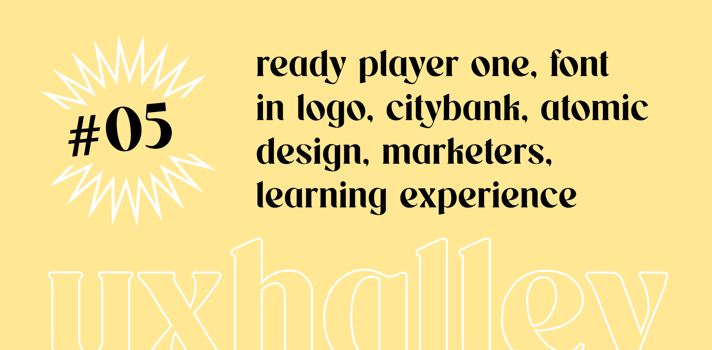

UX Halley, newsletter per designer
uxhalley, edizione #05
05 dicembre 2022 — UX Halley: una newsletter bisettimanale che raccoglie news e links utili sulla UX. Un progetto dell'ecosistema The UX North Star, insieme al libro, al file UX Antimateria e (a breve) al podcast. Le regole sono semplici: 5 minuti di lettura per link utili e news dal mondo della UX. Se ti interessa, lo approfondisci. Se ti piace, lo condividi. Facile facile.
Immagine di copertina dell'edizione di UX Halley, newsetter per designer
Link per designer suggerito nell'edizione di UX Halley, newsletter per designer
l'errore di ux da 500mln di dollari
Tutti possono sbagliare e in generale l'errore è fondamentale per una crescita sana, purché si capitalizzi sempre e se ne faccia tesoro. Certo, un errore di UX che costa 500 milioni di dollari non è proprio facile da capitalizzare e digerire, soprattutto se si parla di un sistema bancario internazionale come Citybank. Cosa puoi capire da questa storia incredibile? Che ogni scelta di UX ha un impatto. Progetta con responsabilità, e fatti due risate (per dire) leggendo la storia di questo mega-errore.
Link per designer suggerito nell'edizione di UX Halley, newsletter per designer
atomic design
Se si parla di design system non si può non citare Brad Frost: colui che ha definito, scritto, raccontato e se vogliamo "teorizzato" il concetto di Atomic design. Atomi, molecole, organismi, una vera e propria matrioska virtuale che permette di costruire sistemi coerenti, scalabili e gerarchici. Se non lo conosci devi provvedere a recuperare, subito.
Link per designer suggerito nell'edizione di UX Halley, newsletter per designer
ux/ui designer italia
In qualsiasi momento della propria carriera serve il confronto. A volte riusciamo ad averlo nel team, altre volte no. Per questo motivo servono le community: quei luoghi in cui poter domandare, rispondere, collaborare, sentendosi al sicuro. Ecco, UX/UI Designer Italia è IL posto in cui farlo (sottolineo IL).
Link per designer suggerito nell'edizione di UX Halley, newsletter per designer
learning experience design
Nel corso degli ultimi due anni, per via del cambio di scenario globale e della pandemia, ci sono molte "cose" che sono cambiate. Tra questo c'è il fatto che le organizzazioni, aziende, scuole e professionisti, hanno scoperto o appreso che la formazione online è qualcosa di estremamente preziosa. Si è iniziato a parlare quindi di learning experience design, instructional design, learning management system e tante altre buzzword che riguardano questo affascinante mondo. Quanto ne sai? C'è davvero tanto da conoscere eh, te lo dico.
Link per designer suggerito nell'edizione di UX Halley, newsletter per designer
contaminarsi sempre
Che ci fa una newsletter che parla di business, marketing, strategia e tante altre cose (ma poco spesso, se non mai, di UX) in una newsletter per designer? Te lo dico io: se già non lo fai, ti devi assoluamente contaminare e informare di tutto, non solo di design. Non è facile, il tempo è poco, per cui bisogna scegliere bene. Io lo faccio, tra gli altri, con la newsletter di Marketers e seguendo profili come Dario Vignali, Omar Bragantini e Alexandru Birleanu.
Link per designer suggerito nell'edizione di UX Halley, newsletter per designer
font aziendale?
Quante volte lo hai pensato? Quante volte hai fallito nel cercare il font di qualche azienda o brand? Si tratta di quel "qualcosa" che ti capita poco spesso ma che quando ti capita ti serve per "ieri". Non aggiungo altro, mi ringrazi dopo.
Link per designer suggerito nell'edizione di UX Halley, newsletter per designer
ready player one
I termini come #vr, #ar e #metaverso non sono delle buzzword ma sono realtà. Non si parla di futuro ma di presente e la questione è semplice: o lo capisci, ti aggiorni ed informi (almeno per non rimanere troppo indietro), o lo subisci (e subirai poi le conseguenze di non averci messo l'attenzione quando avresti dovuto). Se ti va di dare uno sguardo al futuro, a mio avviso neanche così tanto lontano, forse distopico, forse no, c'è un film molto carino che puoi vedere.